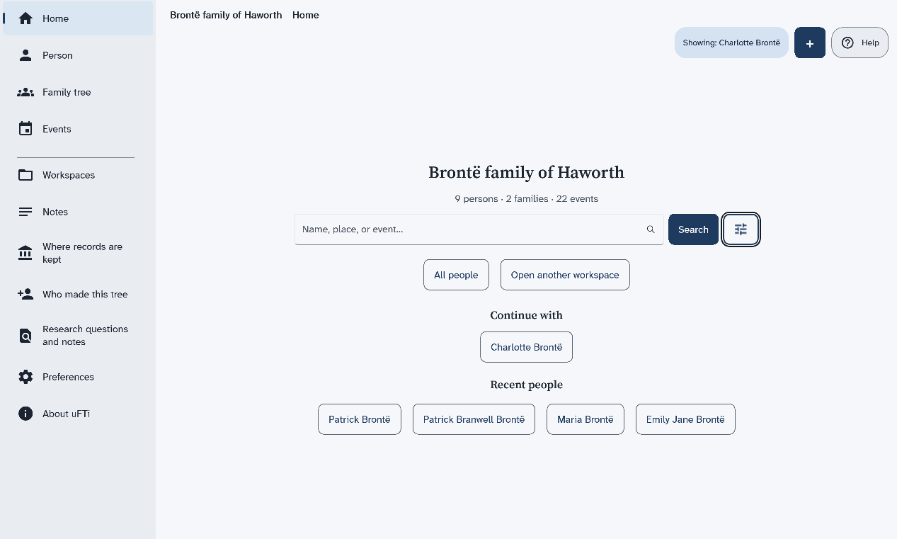
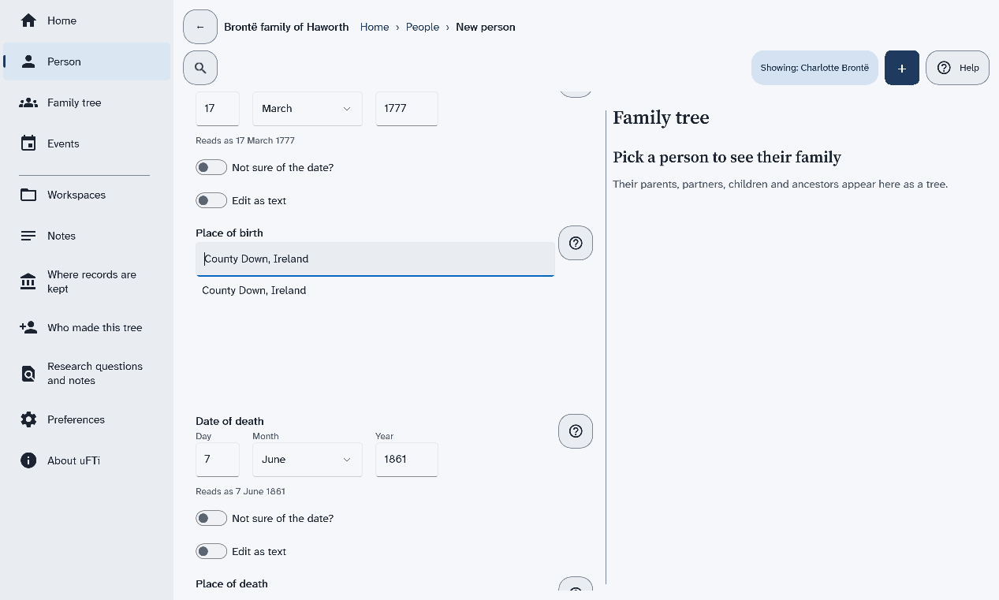

Quick Start
Six short pages that take you from opening uFTi to your first person, with its source and a copy.
This takes about ten minutes. Each page has a few steps. Do them in order.
Understanding family tree information
Oughtibridge Ltd
© 2026 Oughtibridge Ltd
This publication is available at https://docs.ufti.com/windows/Alpha-2/start/
Six short pages that take you from opening uFTi to your first person, with its source and a copy.
This takes about ten minutes. Each page has a few steps. Do them in order.
Open uFTi and find the main places: the menu at the left, the plus button, search and Help.
The first time you open uFTi, it opens a sample tree, the Brontë family of Haworth. Use it to look around.
You have seen the main places. Help is a button at the top right of every screen. The picture shows Home once a person has been opened. It then has Continue with and Recent people.

Next: Add your first person.
Make a tree of your own and add the first person to it.
That is your first person. uFTi saves your work as you go.

Next: Say where you found it.
Add a source to a fact, so you always know why you believe it.
Use a tree that already has a source in it. The sample tree has some: choose Workspaces in the menu, then Open on its card. On Home, search for a person who has a birth date, and choose their card.
The fact now has a source. Later, when two records disagree, this is how you will know what to believe.

Next: Keep it safe.
Save a copy of your tree as a file, and keep it somewhere else too.
Make a new copy after you add a lot. Keep one on another drive too.
Next: What next.
You have a tree, a person, a fact with its source and a copy, so choose where to go from here.
Well done. What do you want to do now?
The five ideas behind uFTi, in two minutes.
You can have more than one. Each shows as a card on the Workspaces screen. Make a new workspace for each tree.
Add a person for each relative. A family joins a couple. uFTi draws a tree from your families. Choose Family to see it.
A fact is something you record, such as a birth with its date. A source is where you found it. It can be a certificate, a census page, or what someone told you. A small chip beside each heading on a person's page counts the sources. Choose the chip to add one. Then you will always know why you believe a fact.
uFTi saves your work as you go. To keep a copy, choose Save as… on your workspace's card. Keep the file somewhere else too. Do it again after a big session.
Look in this guide when you are stuck. Use its search box, and type the words you would say. Practise in a workspace you make for the purpose.
Something you record about a person, such as a birth with its date and place.
A GEDCOM file that holds a whole family tree, with its people, families, facts, sources and research notes. It does not hold pictures or other attached files. You can open one, save one and send one.
The standard format for family tree files. Many family tree programs read it. GEDCOM 5.5.1 was published in 1999. It has been the common format for more than twenty years. GEDCOM 7, published in 2021, is the newer version. A version belongs to the standard, not to uFTi.
One file that holds a whole workspace. It has the family tree with its research notes, and the pictures and other files. It is the best way to save and send your work.
A family tree drawn for one person. It shows their parents above them, and their partners and children.
Where you found a fact. It can be a certificate, a census page, a book, or what someone told you.
One family tree and everything kept with it. That is the family tree file with its research notes, and the pictures and other files you attach. A GEDZIP file holds all of it. You can have more than one.